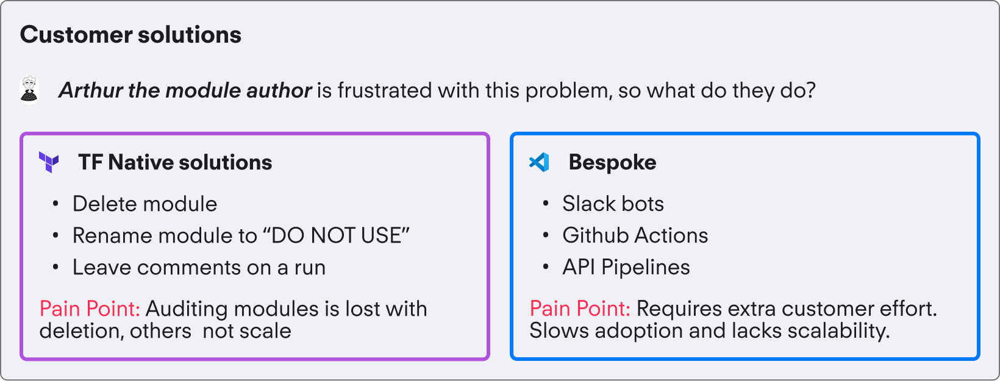

Enabling module lifecycle management within HCP Terraform

HashiCorp
Q3 2024
Lead Product Designer, Researcher
Figma, Snowflake, CommandAI
Think of Terraform Modules as the "recipe" for repeatable chunks of infrastructure, and the registry being the recipe books.
Terraform Cloud has the concept of software modules as a foundational element for managing cloud infrastructure. Modules are reusable, self-contained packages of Terraform configurations that encapsulate a set of resources. They help organize and manage infrastructure as code by promoting reusability and maintainability. You can define a module once and then use it many times, which helps for the overall notion of DRY (Do not Repeat Yourself) code. Modules come in two core flavors - public, which are downloaded from the Terraform registry, and private, which are managed by internal organizations.
The authors of modules lack the ability to natively manage the lifecycle of their infrastructure modules.
Terraform modules, like any software, evolve through versioning (think iOS 17 to 18). Organizations release new versions to address security, bugs, and improvements. The challenge is getting users to upgrade—different roles and skill levels create gaps in how people experience these updates.

The separation in these two personas is what makes this tricky. Lets consider the following scenario:
Customers work around this native feature through anti-patterns that do not scale well.
There are two core ways to approach this problem currently, which was told by customers. Each have downfalls and are indicative of the level of cloud maturity of the customer.
I assumed authors and consumers worked on the same team—but they rarely do!
My EPD team approached this by examining the gap between module authors and module consumers. To build empathy, we joined customer calls to see how organizations were truly structured.
I initially assumed both personas sat on the same DevOps or cloud infra team. In reality, authors were usually platform engineers on central SRE teams, while consumers were app developers or SWE’s seeking quick, self-serve infrastructure. This revealed how communication could easily break down—these groups often never interacted directly, making alignment much harder.
Module authors need a native way in Terraform to communicate to module consumers for situations when you need to upgrade or migrate your module.
Customer calls unveiled a need for deprecation and revocation well after a module version is first published.
These customer calls and the problem statement helped us to devise some basic user flows. The parts of the flow that was highlighted are "new" areas.
I decomposed the overall flow into 2 core goals.
From here it was clear that we needed to build something within Terraform to help this core persona of the module author. To help understand how to create a solution we had to decompose the problem a little bit more.
Communication to end users
Module consumer Persona
Dissuasion of previous version usage
Long tail Goal
Presenting information in context
Challenge: How might we give information in context in a way that is noisy enough to notice, but not overwhelming?
Decision: Use shortened accordions, with alerts to draw attention

Decoupling messaging from a run
Challenge: Users don’t always kick off runs in a set cadence, and sometimes informing them there might be too late. How might we provide information more statically?
Decision: 2 new indicators of module health that is decoupled from the run was included.

Zooming out and tying it to general workflow
Challenge: What are broader Jobs To Be Done that encompass these workflows, how do they fit in?
Decision: Module health data included in the explorer, greater change request flows

Crafting a CLI Experience
Challenge: The CLI is often the golden workflow for users, how can we create a minimal viable design for the CLI?
Decision: Use verbose messaging in the CLI, and summarized in the UI

The full prototype from module author persona to the linking with the module consumer persona.
This project was super interesting as it features a common problem that many organizations face at scale. It was really cool hearing how mature organizations tried to solve this problem in a bespoke way, and how our solution could help them. One of the core learnings here was developing a skill for listening intently, and tuning through the noise. It was really important to face the extreme amount of signals that could come with a research effort of this scale.
Another awesome milestone was seeing this unveiled at the largest possible stage at HashiConf, HashiCorp’s massive annual user conference. You can check out the recording here!